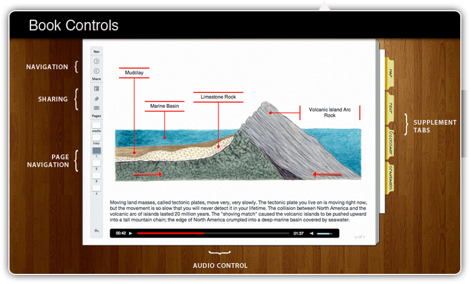

Interactive Lessons
Back to the Towpath
About the Bookshelf

Local Geology Lessons
The Formation of Coal Deposits
The Formation of Slate Deposits
The Formation of Iron Ore Deposits
The Formation of Limestone Deposits